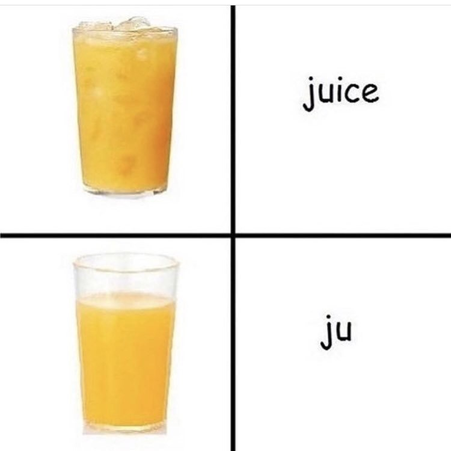
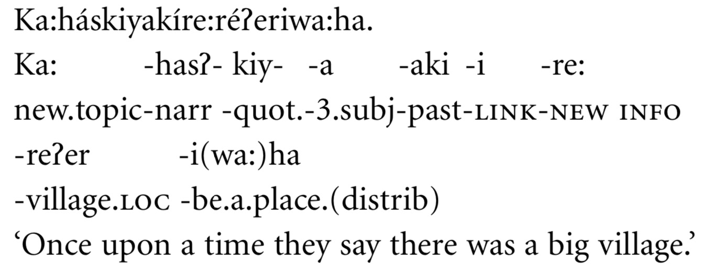
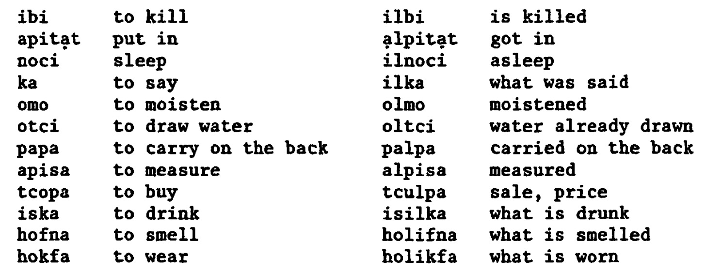
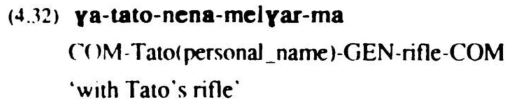
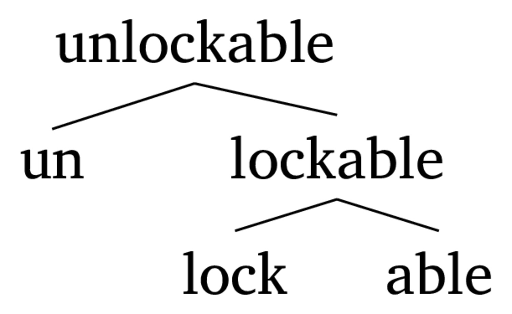
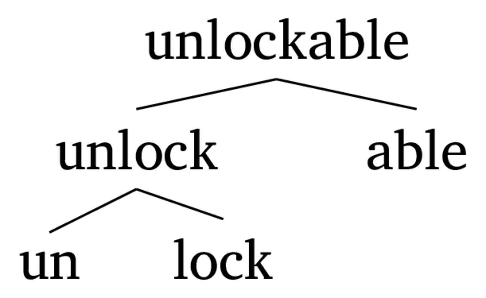
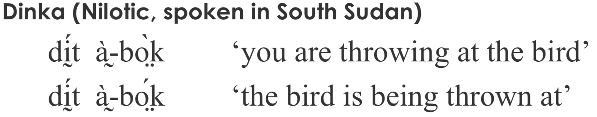
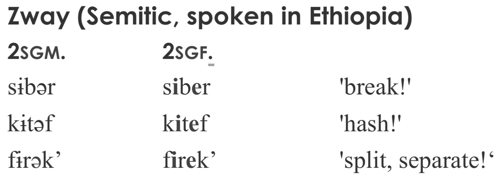
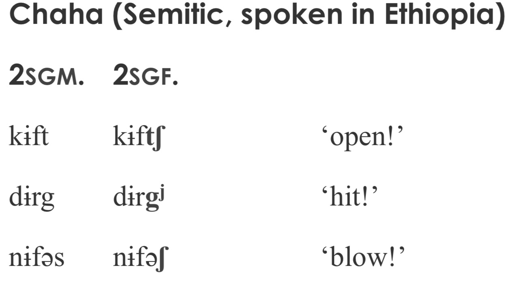

How do we gloss sentences?
How do languages vary in how they use morphology?
What kinds of morphological machinery are common around the world?
‘There is no salt’
Baker, M. (2002). On category asymmetries in derivational morphology. In Morphology 2000. John Benjamins Publishing.
‘Once upon a time they say there was a big village.’
üòÆ
We can provide detailed glosses which relate the language forms to the translated meaning
These are called interlinear glosses, and (often) follow the Leipzig Glossing Conventions
be.1SG.PRES from Denver
‘I’m from Denver’

It allows quicker understanding of the components and elements of the sentence
We see the morphology front-and-center
This is a bit tricky in typesetting, but it works!
Interlinear glossing is a great tool to use in describing data and words!
Separate morphemes using ‘-’
Separate within-morpheme meanings using ‘.’
This is subtle, but crucial

(Yes.)
A means of categorizing how languages put words together
This is useful for comparing word-building strategies across languages
Do words have lots of morphemes or few?
If words have few morphemes (like English or Chinese), they’re “isolating” or “analytic”
If they have many (like Spanish or German), they’re “synthetic”
I did see the cat on the street, he’s cute.
I did see DEF cat on DEF street he-be.3sg cute.
Esta escribiéndomelo
be.3sg write-GER-1sg.DAT-3sg.MASC
‘He/she is writing it to me.’
Kiyakiic√≠wa:c√©:hir îas îirhawi
‘There was the big buffalo lying there.’
If the meanings have individual, easily separable forms, it’s “agglutinating”
If the meanings merge inseparably into opaque forms, it’s “fusional”.

Donaudampfschifffahrtselektrizitätenhauptbetriebswerkbauunterbeamtengesellschaft
Donau-dampf-schiff-fahrts-elektrizitäten-haupt-betriebs-werk-bau-unter-beamten-gesellschaft
Danube-steam-ship-transport’s-electricities-head-operation’s-work-building-under-officials-association
Ti uhodila so mnoi
Ti u-hodi-la so mnoi
2sg.NOM away-go.IMPERF-past.FEM with 1sg.INST
“You left with me”
Durmiéramos
Durmiéramos
Sleep.2pl.SUBJ.PAST.IMPERFECT
English is isolating, but Mandarin is more isolating
Most languages do some fusion and some agglutination
If a language has few morphemes per word, it’s isolating
If the language has multiple morphemes per word, it’s synthetic
If a synthetic language generally has easy-to-pick-apart morphemes, it’s agglutinating
If a synthetic language generally has blended or combined morphemes, it’s fusional
… Which gets us into our next question
Concatenation
Non-Concatentative Processes
Combining elements in a strictly linear order, end-to-end
So, concatenative morphology adds morpemes one-after-the-other
fish-ing
in-conceiv-able
Prefixes
Suffixes
Circumfixes
Infixes
Precedes the base
in-conceivable
u-hodi-t (away-go.IMPERF-INF) ‘To go Away’ (Russian)
Follows the base
cat-s
u-hodi-la (away-go.IMPERF-PAST.FEM) ‘She went away’ (Russian)
Placed inside the base
abso-f***ing-lutely
Alabama Passive infix -l-

Occur on both sides of the base, but not independently
German ge-X-t past participle (ge-spiel-t, from spielen)
This Papuan Malay circumix ke-X-ang which nominalizes verbs



Prefix
Suffix
Infix
Circumfix
This Begak (Austronesian, Malaysia) infix -i- marking completive aspect

The infix is added, then the stem vowel is removed
Can also neutralize contrasts
Un-thought-ful-ness
Incorrect understanding of the ordering can lead to morphological ambiguity
This appears well handled by hierarchy
This is why some people create morphological trees, showing the components being modified





… but are we always adding something on?
You can’t readily disassemble the pieces
The meaning change is carried by modifications to the other morphemes
… or nothing appears to change at all!
Conversion
Stem Modification
Reduplication
‘Just change the usage to change the type’
Sometimes, there are changes with stress shift
re’peat (V) -> ’repeat (N)
con’vict (V) -> ’convict (N)
Sometimes, there are no changes
ticket (N, V)
drink (N, V)
I computered all day yesterday.
Modify the stem to indicate a shift in morphological category or meaning
This can take many forms


What’s the 2SGF morpheme in Zway?
Also, sing/sang

Copying all or part of the base

A big, BIG problem if you’re expecting different segments
Using reasonable glossing conventions makes life easier for everybody
Languages have more or fewer morphemes per word, and meanings separate more or less cleanly
Meaning can be expressed by concatening chunks of form in various ways
… or by modifying the base in predictable and detectable ways
Be prepared for all kinds of craziness when dealing with actual language data!